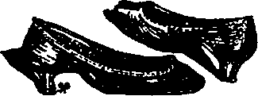
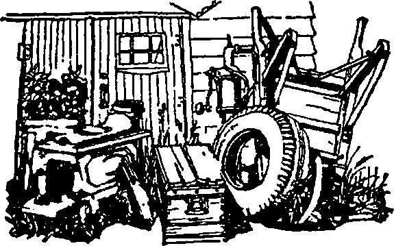
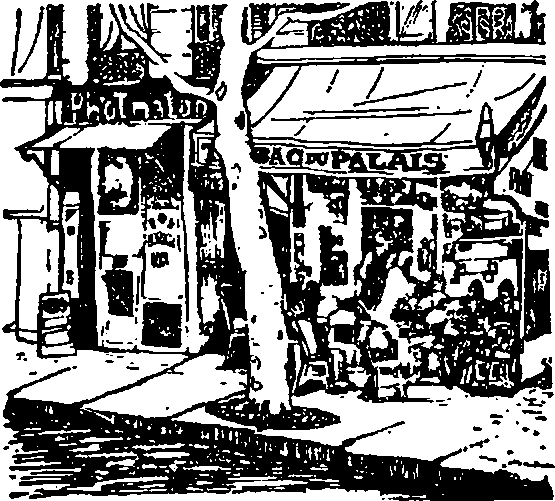
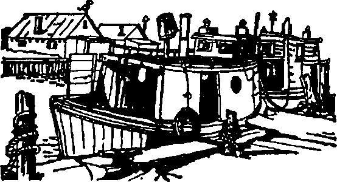
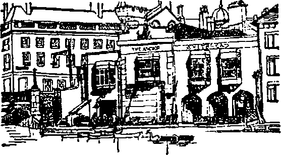
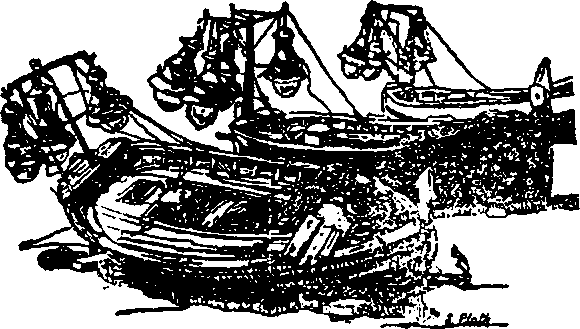
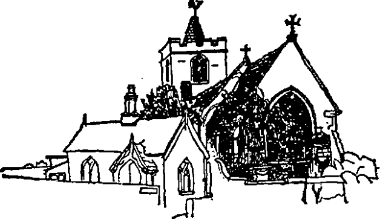

Sırça Fanus (The Bell Jar) ilk kez Ocak 1963’te Londra’da William Heinemann Limited tarafından Victoria Lucas takma adıyla yayımlandı. Sylvia Plath’ın ilk romanında takma ad kullanmasının nedeni, onun «ciddi bir yapıt» olduğuna inanmayışı ve edebi değerinden emin olmayışıydı. Aynı zamanda kitabın yayımlanmasının, kitapta kişilikleri çarpıtılmış ve hafifçe maskelenmiş olarak rol alan yakınlarını üzebileceğini düşünerek de kaygılanıyordu.
Sırça Fanus’un temelini Sylvia Plath’ın gençlik yıllarının ana temaları oluşturmaktadır. Yazar 1932’de Massachusetts’ta doğmuş ve çocukluğunun ilk yıllarını Boston yakınlarında bir kıyı kasabası olan Winthrop’ta geçirmiştir. Annesi Avusturyalı bir ailenin kızıydı. Boston Üniversitesinde tanınmış bir biyoloji profesörü ve anlar konusunda uluslararası üne sahip bir otorite olan babası gençliğinde Polonya’dan Amerika Birleşik Devletlerine göçmüştü. Sylvia’nın kendisinden iki buçuk yaş küçük bir erkek kardeşi vardı. Daha sekiz yaşındayken Sylvia’nın yaşamında köklü bir değişiklik oldu. Kasım 1940’ta babası uzun ve zorlu bir hastalık sonunda ölünce, annesi, büyükannesi ve büyükbabası aileyi kıyıdan içeriye. Boston’un oldukça varlıklı ve tutucu ailelerinin oturduğu bir banliyösü olan Wellesley’e taşıdılar. Büyükanne evi çekip çevirme sorumluluğunu üstlenmişti. Anne Plath ise her gün Boston’a inerek Boston Üniversitesinin tıp sekreteri yetiştirme programında öğretmenlik yapıyordu. Büyükbaba, Brookline Şehir Kulübü’nde başgarson olarak çalışıyor ve hafta boyunca orada kalıyordu. Sylvia ile erkek kardeşi, bulundukları yerdeki parasız resmi okullarda eğitim gördüler. Sylvia sonraları, «Ben halk okullarına gittim,» diye yazmıştı, «herkesin gittiği gerçek halk okullarına.» Küçük yaşta şiir yazmaya, çini mürekkeple resim yapmaya ve her iki alanda da ilk yapıtlarıyla ödüller kazanmaya başladı. On yedi yaşına geldiğinde yazma hevesini belli bir denetime ve disipline sokmuştu artık. Ancak yazdıklarının yayımlanması pek de kolay olmadı. Seventeen dergisinin Ağustos 1950 sayısında çıkan «Ve Artık Yaz Gelmeyecek» adlı kısa öyküsünden önce dergiye tam kırk beş öykü göndermişti. Aynı ay içinde Christian Science Monitor gazetesinde, savaş hakkında buruk bir alayla yazılmış bir eleştiri niteliği taşıyan «Acı Çilekler» adlı şiiri yayımlandı. Sonraları kendini «çılgın bir pragmatist» olarak tanımlayan genç kızın özellikleri lise yıllığında şöyle yansıtılmıştı:
Sıcak bir gülümseme... Tükenmez bir enerji... Piyanoda acemice çalman dans müziği... Ustaca kullanılan tebeşir ve boyalar... Williams’da hafta sonları... O tıkabasa doldurulmuş sandviçler... Geleceğin yazarı... Seventeen’den gelen olumsuz mektuplar... Ah bir de ehliyet alsa!

Eylül 1950’de Sylvia, Northampton, Massachusetts’taki dünyanın en büyük kadınlar üniversitesi olan Smith College’a girdi. Biri Wellesley Smith Club’dan, öbürü Stella Dallas’ın yazarı ve sonradan Sylvia’yı korumasına alan dostu romancı Olive Higgins Prouty’den olmak üzere iki tane burs kazanmıştı. Bu yıllar Sylvia’nın sıkı bir programa göre şiir yazdığı, babasının kırmızı deri kaplı ‘Büyük Sözlük’ünde sözcükleri işaretlediği, ayrıntılı bir günlük tuttuğu ve yoğun bir biçimde çalıştığı yıllardı. Çok başarılı bir öğrenci olmasının yanısıra sınıf ve okul etkinliklerinde de görev alıyordu. Smith Review gazetesinde editörlük yapıyor, hafta sonlarında öbür üniversitelerin çalışmalarına katılıyor, Seventeen dergisi için öyküler ve şiirler yazıyordu. Ama bu dönemde yazdığı bir mektupta. «Görünüşteki birkaç küçük başarıya karşılık, kendime yönelik uçsuz bucaksız kuruntu ve kuşkular içindeyim.» diyordu. Sonraları yine bu dönemle ilgili olarak bir arkadaşı, «Sanki Sylvia yaşamın kendisine gelmesini bekleyemiyor gibiydi.» demişti. «... Onu karşılamak için öne atılıyor, her şeyi gerçekleştirmeye çalışıyordu.»
Kadınlığının bilincine giderek daha çok vardıkça bir ozan aydınla bir eş ve annenin yaşam biçimleri arasındaki çelişki, kafasını uğraştıran temel bir sorun haline geliyordu. «Yaşamımın büyük bir bölümünü sanki bir sırça fanusun içindeki yoğunluğu azaltılmış havada geçirişim oldukça şaşırtıcı.» diye yazmıştı. Bu arada Ağustos 1951’de «Mintanlarda bir Pazar» adlı kısa öyküsüyle Mademoiselle dergisinin öykü yarışmasını kazandı. Bunu izleyen yılda, üniversitenin üçüncü sınıfındayken de iki kez ‘Smith Şiir Ödülü’nü kazandı ve Smith College’ın onursal sanat derneği Alpha’ya ve Phi Beta Kappa Kulübü’ne üye seçildi. 1952 yazında da Mademoiselle dergisinin açtığı üniversitelerarası yarışmayı kazanarak konuk editör olarak New York’a davet edildi. Not defterinde. New York’ta geçirdiği bir ayın başlangıcını, derginin soluk soluğa üslubuyla anlatıyordu:
Geçen yıl Ağustosta Mademoiselle’in öykü yarışmasını kazanan. (500 dolar!) iki kişiden biri olduktan sonra artık yuvaya döndüğümü sanırken Smith’i temsilen konuk editör olarak New York City’ye çağrılınca, bir ay süreyle ücretli olarak Mlle’in Madison Avenue’deki klimalı bürolarında çalışmak üzere -topuklu ayakkabı ve şapkayla elbette!- trene atladım... Konuk editör olarak çalıştığım o dört şenlikli, karmakarışık haftayı anlatmak için «inanılmaz, harika» ve öbür bütün sıfatlar yetersiz kalır... Barbizon’da lüks içinde yaşarken editörlük yapıyor, ünlülerle tanışıyor, Birleşmiş Milletler’den delegeler, simültane çevirmenler ve sanatçılardan oluşan seçkin topluluklarca ağırlanıyor, yemek davetlerine katılıyordum... İnanılmaz bir lunaparkta gibiydim ay boyunca - Smith’ten gelen Külkedisi, ilahlarla tanıştı: Vance Bourjaily, Paul Engle. Elizabeth Bowen - beş tane genç, yakışıklı erkek ozan ve öğretmenle mektuplaşarak makaleler yazdı.

Bu ozanlar Alistair Reid, Anthony Hecht, Richard Wilbur, George Steiner ve William Burford’du. Defterde hepsinin resimleri, özyaşam öyküleri ve şiirleriyle ilgili notlar da vardı.
230 küsur sayfa reklamdan sonra derginin Ağustos 1953 üniversite sayısı, konuk editör olarak Sylvia tarafından, «Mlle’in üniversite ‘53 için son sözü» başlıklı yazısıyla sunulmuştu. Birbirinin eşi ekose İskoç etekler ve onlara uygun bereler giymiş konuk editörleri, yüzlerinde kocaman gülümsemelerle yıldız biçiminde elele tutuşmuş olarak gösteren yavan bir resmin altına şöyle yazmıştı Sylvia:
Bu sezon bir gece mavisi atmosferiyle büyülenmiş bir halde yıldızlara bakıyoruz. Moda burcunda en başta göze çarpan Mlle’in kendi ekose yünlüleri, astronomik bir çeşitlilik gösteren kazaklar ve erkekler, erkekler, yine erkekler-sırtlarındaki gömlekleri bile aldık erkeklerin! Teleskopumuzu yerküre üzerindeki üniversite haberlerine ayarlarken, konuları tartıyor ve tartışıyoruz. Aydınlanan sorunlar: akademik özgürlük, üniversite dernekleriyle ilgili çekişmeler ve çok sözü edilen (çok da yerilen!) kuşağımız. Sevdiğimiz alanlarda, en parlak yıldızlar, mesleğimiz ve geleceğimizle ilgili planlarımız üzerinde gözalıcı etkiler yapıyorlar. En son yörüngemiz hakkındaki yıldız falları daha belli değilse de, biz konuk editörler, üniversitenin yıldızı Mlle’den gönderdiğimiz bu mektupla olumlu tahminler elde edeceğimize inanıyoruz.
Kuşkusuz 358’inci sayfa çok daha mutlu kılmıştı Sylvia’yı - «Mlle. sonunda ‘Çılgın Kızın Aşk Şarkısını- en sevdiğim villanelle’imi - bastı», diyordu.
ÇILGIN KIZIN AŞK ŞARKISI
BİR VILLANELLE
Yazan: Sylvia Plath
Smith College ‘54
Yumuyorum gözlerimi, yıkılıp ölüyor dünya;
Yeniden doğuyor açınca gözlerimi.
(Kafamın içinde yarattım seni galiba.)
Yıldızlar dansediyor mavilerle, kırmızılarla.
Dört nala geliyor keyfince karanlık:
Yumuyorum gözlerimi, yıkılıp ölüyor dünya.
Beni büyüyle çektin yatağa, bunu düşledim,
Şarkılar söyledin çılgınca, delice öptün.
(Kafamın içinde yarattım seni galiba.)
Tanrı düşüyor gökten, sönüyor cehennem ateşleri:
Çekip gidiyor melekler de, şeytanın adamları da:
Yumuyorum gözlerimi, yıkılıp ölüyor dünya.
Söylediğin gibi dönersin demiştim,
Ama yaşlanıyorum artık, unuttum adını.
(Kafamın içinde yarattım seni galiba.)
Bir fırtına kuşunu sevmeliydim senin yerine;
Bahar gelince gökyüzünü basarlar hiç değilse.
Yumuyorum gözlerimi, yıkılıp ölüyor dünya.
(Kafamın içinde yarattım seni galiba.)

O yaz ayrıca Harper’s Magazine de Sylvia’nın üç şiiri için 100 dolar ödedi. Sylvia bunu «ilk profesyonel kazancı» olarak nitelendiriyordu. Sonraları, bu coşku dolu başarıları değerlendirirken, «Tümüyle sanatsal, sosyal ve parasal bir dalganın üzerinde yükseldiğimi hissediyordum», diye yazmıştı, «- Ne var ki o altı aylık çöküntü gelmek üzereydi-.»
Bunlar Sylvia’nın yaşamında 1953 yaz ve sonbaharında - Rosenberg’lerin elektrikli sandalyede idam edildiği. Senatör Joseph Mc Carthy’nin güçlendiği, Eisenhower’ın başkanlık döneminin başladığı sıralarda- geçen olaylardı. Sylvia Plath’ın Sırça Fanus’un çerçevesinde yeniden kurup canlandırdığı olaylardı hepsi. Yıllar sonra, yazmak istediği kitabı şöyle anlatmıştı:
Giderek yapay ve yüzeysel görünen moda magazini dünyasının baskıları, bir Boston banliyösünün ölü yaz ortamında eve dönüş. Burada kitabın kahramanı Esther Greenwood’un yapısındaki çatlaklar New York’taki çevresel baskılardan kurtulunca dehşet verici bir biçimde genişler ve derinleşir. Çevresine, kendisinin ve komşularının ona boş ve anlamsız gelen yaşantısına bakışındaki çarpıklık giderek tek doğru bakış biçimi gibi gelmeye başlar.
Bundan sonraki dönem Sylvia için elektroşok tedavisi, yankılar yaratan bir kayboluş, yeniden bulunuş ve psikoterapi için yeniden hastaneye yatış dönemi oldu. Bu dönem hakkında, «Ancak insan hayalindeki cehennemin olabileceği kadar siyah bir umutsuzluk, karanlık, düşkırıklığı dönemi -sembolik ölüm ve uyuşturan şok- sonra, yeniden, ağır ağır doğuşun ve ruhun yenilenişinin sancıları.» diye yazmıştı.
Daha sonra Sylvia, Smith CoUegea döndü ve her şeye yeniden dört elle sarıldı. Bir sonraki yazın başlangıcında, «bu yeniden kuruluş dönemi belki geçen yıldan daha az parlak ve çarpıcı, ama çok daha sağlam bir gelişmeyle bitiyor.» diye yazmıştı. Bir sonraki akademik yılın sonunda daha çok şiir satmış, yeni ödüller kazanmış ve Dostoyevski’nin romanlarındaki «çifte kişilik» olgusu üzerine uzun bir tez yazmıştı. Haziran 1955’te Smith College’dan iftihar derecesiyle mezun oldu ve Cambridge Üniversitesindeki Newnham College’da okumak için bir yıl süreli Fulbright bursu kazandı. Orada İngiliz ozanı Ted Hughes’la tanışan Sylvia, 16 Haziran 1956’da Londra’da onunla evlendi. Sylvia’nın Fulbright bursu uzatılmıştı. İspanya’da bir tatilden sonra Ted’le birlikte bir yıl daha Cambridge’de yaşadılar. Sonra.

1957 baharında Amerika Birleşik Devletlerine yerleştiler. Sylvia meslektaşları tarafından. «Smith College’ın İngilizce bölümüne gelmiş geçmiş en iyi birkaç öğretmenden biri» olarak nitelendiriliyordu.
Büyük bir olasılıkla Sylvia Amerika’ya döndüğünde Sırça Fanus’un bir taslağını da yanında getirmişti, ama o aralar çabaları şiir ve öğretmenlik üzerinde yoğunlaşıyordu. Haziran 1958’de, yazmakta olduğu şiir kitabını tamamlayabilmek için Eugene F. Saxton Vakfına başvurdu. Harper and Brothers’ın önemli yayıncılarından birinin anısı için kurulmuş olan Vakıf, yetkili kurulun kararıyla yazarlara maddî bağışlarda bulunuyordu. Bursun verilebilmesi için tüm kurul üyelerinin ortak karan gerekliydi. Kurul üyelerinden bir tanesi, örnek olarak gönderilen şiirleri «kusursuz» diye nitelendirmekle birlikte. «Bayan Hughes’un geçmişine bakınca görüyorum ki yetişkinlik döneminin büyük bir bölümünde pek çok değerli ödül kazanmış. Bir süre iyi bir üniversitede öğretmen olarak çalışmalarını sürdürmesinde bir sakınca yok sanırım. Yapıtlarının değeri kendisinin ciddi olarak dikkate alınmasını gerektirmekteyse de ben olumsuz oy verme eğilimindeyim,» diye yazmıştı. Ekim 1958’de Sylvia’nın başvurusu, kurul sekreterinin özel bir mektubuyla reddedildi. Mektupta Bayan Hughes’un başvurusunun «olağanüstü bir ilgi uyandırdığı» belirtiliyor, «tartışma konusu olan, kayda değer yeteneğiniz değil, projenin niteliğiydi,» deniliyordu.
Bu arada Hughes’lar, Beacon Hill’de küçük bir eve taşınmışlardı; «sınırlı bir bütçeyle bir yıl Boston’da yaşayıp ne yapabileceğimizi görmek istedik,» diyordu Sylvia. Öğretmenliği bırakmak ve çocukluğundan beri yöneldiği akademik plandan vazgeçmek, gibi güç bir kararı vermiş ve onun yerine daha belirsiz, ama yazmak için ona daha fazla zaman vereceğini umduğu bir yaşam biçimini seçmişti. Ne var ki, yıl ilerledikçe ve şiir kitabı durmadan değişen adlar altında tekrar tekrar sunulup reddedildikçe şöyle yazmıştı:
Basılmamış bir yazı yığını kadar kokuşmuş bir şey olamaz. Böyle söyleyişim de yazmak konusunda hâlâ katıksız - «ah, öyle zevkli ki yazmadan duramıyorum, yazdıklarım basılmış basılmamış, okunmuş okunmamış, umurumda bile değil» gibisinden- bir güdüye sahip olmadığımı gösteriyor sanırım... Hâlâ, yazdıklarımı ergeç basılmış olarak görmek istiyorum.
Aralık 1959’da Sylvia’yla Ted yerleşmek üzere İngiltere’ye döndüler. Nisan 1960’ta ilk çocukları Freda doğdu. Sonunda Sylvia’nın şiir kitabı, The Colossus, sonbaharda basılmak üzere William Heinemann Limited tarafından kabul edilmişti. Bundan sonra Sylvia bir çocuk düşürdü, apandisit ameliyatı geçirdi ve yine hamile kaldı. 1 Mayıs 1961’de Eugene F. Saxton bursu için yeniden başvurdu. Bu kez bursa altıda biri - yaklaşık elli sayfası- tamamlanmış bir romanı bitirmek için gereksinme duyuyordu.

Başvurusunda Sylvia, «Çocuk bakıcısı için günde 5 dolardan haftada 6 gün için yılda 1560 dolar; büro kirası için haftada 10 dolardan yılda 520 dolar; toplam 2080 dolar» istiyordu. «Şimdi eşim ve bir yaşındaki çocuğumla birlikte iki odalı bir dairede oturuyor ve masraflarımızı karşılamak için yarım gün çalışmak zorunda kalıyorum,» diyordu. Bir arkadaşına yazdığı mektupta da, «bir bunalıma doğru giden ve sonunda bunalım geçiren bir üniversiteli kız hakkında yazmakta olduğu romanın üçte birinden çoğunu bitirdiğini» yazıyordu.
Bunu on yıldır yapmak istiyordum ama ‘Bir Roman Yazmak’ konusunda bilinçaltıma işlemiş müthiş bir tutukluk vardı bende. Sonra, bir New York yayıneviyle şiirlerimin Amerika’ da basılması konusunda görüşmelere başladığım sırada, birdenbire bentler yıkıldı, bütün bir gece dehşetli bir heyecana kapılıp uyanık kaldım ve bu işi nasıl yapmam gerektiğini gördüm. Ertesi gün yazmaya başladım. Artık her sabah sürekli bir işe gider gibi ödünç büroma gidiyor ve biraz daha yazıyordum.
Yaz gelince Hughes’lar saz damlı bir kır evinde yaşamak üzere Devon’a taşındılar. 6 Kasım 1961’de Saxton Vakfı’nın sekreteri bir mektupla Sylvia’ya istediği miktar olan 2080 dolar tutarındaki bursun verilmesine oybirliğiyle karar verildiğini bildirdi. Sylvia yanıtında, «Bugün Saxton bursuyla ilgili olumlu mektubunuzu aldım, çok sevindim,» diyordu. «Kesinlikle romana devam etmeyi planlıyorum. Bursun verilmesi bana bu olanağı özellikle uygun bir zamanda sağlamaktadır.»
17 Ocak 1962’de Nicholas adlı bir oğlu oldu. Çocuklar, ev işleri ve roman yazmak arasında bölünmüştü günleri. Ama 10 Şubat 1962’de Sylvia, Saxton Vakfı kuruluna, romanın gelişmesiyle ilgili ilk üç aylık raporunu gecikmesiz olarak gönderdi. «Geçen üç ay içinde roman önceden tasarladığım programa göre, doyurucu bir biçimde gelişti. Birkaç taslaktan sonra beşinci bölümden sekizinci bölümün sonuna kadar olan sayfalara son biçimini verdim. Böylece romanın 105 sayfasını tamamlamış olup aynı zamanda 9-12’inci bölümlerin de ayrıntılı planını hazırladım.» Raporun bundan, sonraki bölümünde Sylvia Sırça Fanus’un ayrıntılı planını veriyordu. Romanın iyi gitmesine karşın Sylvia bir arkadaşına çalışmalarının yetersiz olduğundan yakmıyordu: «Yılda birkaç tane beğendiğim şiir basıldığında çok şey ifade ediyor bana, ama gerçekte bunlar büyük boşluklarla ayrılmış doyum noktalarından ibaret.» l Mayıs 1962’de Saxton Vakfına yazdığı ikinci üç aylık raporda, «Roman programa uygun olarak, çok iyi ilerliyor. 9’dan 12’nin sonuna kadar olan bölümleri (106-166. sayfalar) tamamladım ve bundan sonraki bölümlerin ayrıntılı planını hazırladım,» diyordu. Haziran 1962’de bir arkadaşına, «Yeniden yazmaya başladım. Gerçekten yazıyorum. Yeni şiirlerimden birkaçını görmeni isterdim.» diyebiliyordu. Ariel şiirlerine başlamıştı Sylvia. Ve onları göstermek, okutmak, yüksek sesle okumak isteyecek kadar emindi kendinden. Bu şiirler başkaydı; eşi. «Laleler» şiirinin «ufukta görünen değişimin ilk belirtisi» olduğunu yazıyordu. «Bu şiiri her zamanki gibi Büyük Sözlük’e başvurmadan, ivedi bir mektup yazarcasına, son hızla yazdı. Bundan sonraki bütün şiirleri aynı hızla yazıldı.»
1 Ağustos 1962’de Sylvia Saxton kuruluna son gelişme raporunu gönderdi:
Artık roman ortaya çıkıyor ve hemen hemen planlandığı gibi biçimleniyor. 13’ten 16’nın sonuna kadar olan bölümleri (167-221. sayfalar) tamamladım ve son bölümün de iyi gideceğini umuyorum.
İrlanda’da bir tatilden sonra Sylvia ve Ted bir süre ayrı yaşamaya karar verdiler. Zor bir yaz geçirmişlerdi. Sylvia yüksek ateşli gripten bir türlü kurtulamamıştı. Devon’da bir kış daha geçirmesi olanaksız görünüyordu. BBC’de çalışmaya başlamıştı. Her gün Londra’ya gidip geliyor ve bu arada bir ev arıyordu. Sırça Fanus’un taslağı Saxton Vakfı yetkililerine gönderilmişti. Heinemann Yayınevi de romanı İngiltere’de basmayı kabul etmiş ve dizgi işlemine başlamıştı. Noel’den birkaç gün önce Sylvia, çocuklarla birlikte Londra’ya taşındı. Bir ev bulmuş ve beş yıllık kira anlaşması yapmıştı:
...küçük bir mucize oldu - İrlanda’dayken Ballylea’daki Yeats kulesine gitmiştim. Bence dünyanın en güzel, en huzurlu yeriydi orası. Sonra. Londra’da o çok sevdiğim Primrose Hill çevresinde mahzun dolaşır ve bir ev bulabilmenin umutsuzluğu hakkında kara kara düşünürken... üzerinde «Yeats burada yaşadı» yazılı mavi levhasıyla Yeats’in evinin önünden geçtim. Bu evin önünden sık sık geçer ve içinde yaşamayı özlerdim. Bir tabela asılmıştı bu kez -kiralık daireler! Uçarcasına komisyoncuya koştum. Ancak Londra’da kiralık ev aramışlığın varsa anlayabileceğin bir mucize eseri, ilk başvuran bendim... Beş yıllık bir anlaşmayla buradayım şimdi ve burası cennetin ta kendisi... üstelik Yeats’in evi, bu da şu anda benim için çok şey ifade ediyor.
Sylvia, Yeats’in evini bulmasını hayırlı bir belirti olarak görüyordu. O gün ev aramaya giderken bir ev bulacağını «bildiğini» söylemişti Bir arkadaşına. Bunun doğrulanması üzerine taze bir enerji ve güvenle planlar yapmaya başladı. Yeni bir roman üzerinde çalışıyor ve Ariel şiirlerini yazmaya devam ediyordu. Bir başka arkadaşına Sırça Fanus’u «çıraklık dönemine ait otobiyografik bir yapıt» olarak gördüğünü ve kendini geçmişten kurtarmak için onu yazması gerektiğini söylemişti. Ama daha yakın geçmişindeki olayları konu alan yeni romanını sağlam, güçlü ve önemli bir yapıt olarak görüyordu.
Sırça Fanus Ocak 1963’te yayımlandığı zaman, eleştiriler Sylvia’yı çok üzdü. Oysa aynı gerilim içinde olmayan, kitabın yazan dışında bir okur eleştirmenlerin roman hakkındaki görüşlerini çok farklı bir biçimde yorumlayabilirdi. Lawrence Lerner, şöyle yazmıştı Listener’da: «Amerika’ya yönelik eleştirileri bir nörotik de herkes kadar, belki de daha iyi yapabilir. Miss Lucas da bunu parlak bir biçimde yapıyor.» Times’ın edebiyat ekinde, yazarın «yazmayı bildiği kesin,» deniyordu, «eğer hayal ettiği kadar iyi biçimlendirmeyi de öğrenirse son derece iyi bir kitap yazabilir.» Robert Taubman New Statesman’da Sırça Fanus için «Salinger havasında yazılmış ilk kadın romanı», diyordu.
1970’te Sylvia’nın annesi Aurelia Plath, kızının New York’ta Harper and Row’daki editörüne, Amerika’da ilk kez basılması beklenen Sırça Fanusla ilgili bir mektup yazdı:

Sırça Fanus’un burada basılmasının birçok insanın yaşamında yaratacağı kişisel acıların açıklanmasının ya da herhangi başka bir nedene dayanan bir ricanın bunu durduramayacağının farkındayım. Bu nedenle, kaçınılmaz yansılamaları belirterek ne kendi zamanımı, ne de sizinkini harcamak istemiyorum... Ancak 1962 Temmuzunun başlarında, kişisel dünyası yıkılmadan az önce kızımla yaptığım son konuşmaların birinden sözetmek istiyorum. Sylvia bana Eugene Saxton Vakfına karşı yerine getirmek zorunda olduğu yükümlülüğün, üzerinde yarattığı baskıdan sözetmişti. Bildiğiniz gibi bu Vakıf tarafından kendisine bir roman yazabilmesi için bir burs verilmişti. Verilen süre içinde Sylvia bir düşük yapmış, bir apandisit ameliyatı geçirmiş ve ikinci çocuğu Nicholas’ı doğurmuştu.
«Şöyle yaptım,» dediğini anımsıyorum, «kendi yaşantımdan aldığım olayları bir araya toparlayıp, renklendirmek için hayal gücümü kullandım - aslında yalnızca para kazanmak için yazılmış bir kitap, ama sanırım bunalım geçiren bir insanın kendini her şeyden ne kadar soyutlanmış hissettiğini gösterecek... Kendi dünyamı ve içindeki insanları bir sırça fanusun çarpıtıcı merceğinden görüldüğü gibi anlatmaya çalıştım.» Sonra da şöyle sürdürdü konuşmasını: «İkinci kitabımda aynı dünyayı sağlıklı gözlerle görüldüğü gibi anlatacağım.» Sırça Fanus’taki kişilerin hemen hepsi -genellikle karikatürize edilmiş biçimde- Sylvia’nın sevdiği insanları simgeliyor; 1953’te altı ay süren o ıstıraplı bunalım sırasında bu insanlardan her biri ona cömertçe zamanını, ilgisini, sevgisini ve bir durumda da maddi desteğini sundu... ve bu kitap tek başına ele alındığında, alçakça bir nankörlük örneğinden başka bir şey değil. Sylvia’nın kişiliğinin aslı bu değildi; bu yüzden kitabı basıldığında, yaygın bir başarı kazanma belirtileri gösterince dehşete kapıldı. Sylvia erkek kardeşine yazdığı bir mektupta, «bu kitap Amerika’da asla basılmamak,» demişti. Zaten Sırça Fanus adı da Sylvia’nın bana anlattıklarını anıştırır nitelikte; anlayışlı bir okurun çıkarması gereken anlam da budur...
Londra’da 1813-14 yıllarından beri görülen en soğuk kıştı. Elektrikler önceden bildirilmeyen süreler boyunca kesiliyordu. Borular donmuştu. Sylvia telefon için başvurmuştu ve adı listedeydi, ama telefonu daha gelmemişti. Her sabah, çocuklar saat sekizde uyanmadan önce, Ariel şiirleri üzerinde çalışıyordu. Artık insan yaşamının korkunç ve hükmedilemez oluşu, tüm ilişkilerdeki kuklasal anlamsızlık ağır basıyordu düşüncelerinde. Bir tür şiddetle, şu anda yazdıklarının başka hiç kimse tarafından söylenemeyeceğine inanarak yazıyordu. Hep pratik olmak, acının dile getirilmesi için zaman bulmak gerekiyordu. «Kendimi dakikadan dakikaya gereksinme duyulan ve kullanılan etkin bir araç ya da silah gibi hissediyorum,» diye yazıyordu Sylvia. Gittiği bir doktor ona yatıştırıcı ilaçlar vermiş ve bir psikoterapistle bağlantı kurmasını sağlamıştı. Sylvia bir randevu istemiş ve aynı zamanda Boston’daki eski psikiyatrına da mektup yazmıştı. Durmadan yenilenen bir sinüzit sorunu vardı. Hizmetçi kıza yol vermişti. Sabahları bebeklerin bakımına yardım ederek kendisinin yazmasına olanak verecek yeni birini bekliyordu. «...Gecelerden hayır yok, öyle bitkin oluyorum ki o zaman, beni ancak müzik, konyak ve su paklıyor.»
Dostların desteğine ve yaklaşan ilkbaharın getirdiği umutlara karşın (Mayıs başlarında Devon’daki eve dönecekti) karamsardı, hastaydı. Ama şiir yazmayı yaşamının son haftasında bile sürdürecekti. Hem olağanüstü şiirlerdi bunlar. Öte yandan, çevresindekilere göre her şeyden umudunu kesmişe benzemiyordu. Sık sık neşeli, umut dolu, pırıl pırıl görünüyordu.
Ama 11 Şubat 1963 günü yaşamına son verdi. Kimbilir neden yapmıştı bunu? Sylvia’nın daha önce, Sırça Fanus’un son iyimser sayfalarında yazdığı gibi,
Bir gün, bir yerde -okulda, Avrupa’da, herhangi bir yerde- o boğucu çarpıtmalarıyla sırça fanusun yeniden üzerime inmeyeceğini nasıl bilebilirdim?
- o sırça fanus ki bir kez çok parlak ve başarı biçimde, görünüşe göre tamamen ondan kurtulmuş ama onun içinde yaşamış bir insanın berrak anlatımıyla, «sırça fanusun içinde ölü bir bebek gibi tıkanıp kalmış biri için dünyanın kendisi kötü bir düştür,» diye yazmıştı.